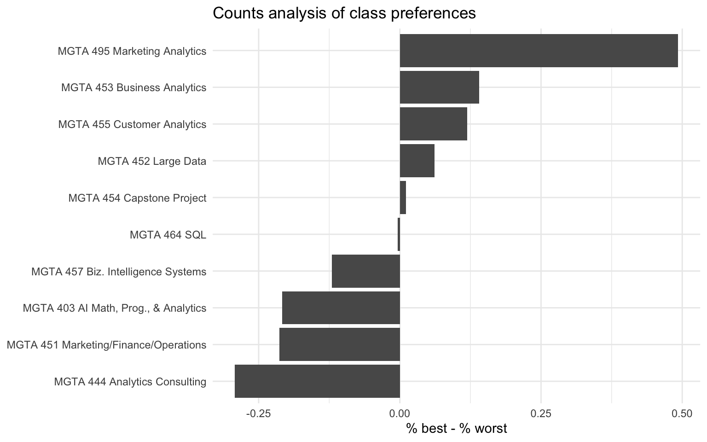
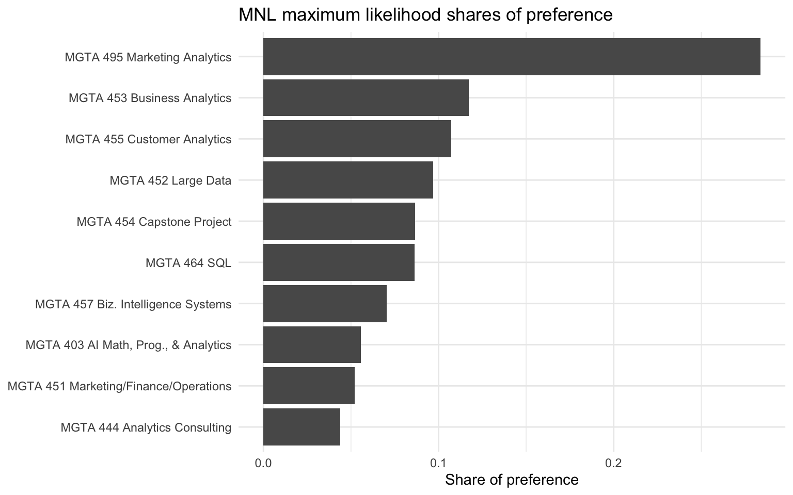

Counts, MLE, and Bayesian estimation of the MNL model
Author
Amelia Li
Published
June 5, 2026
Introduction
MaxDiff, also called Best-Worst Scaling, is a survey method for measuring relative preferences. Instead of asking respondents to rate every item on a numeric scale, MaxDiff repeatedly asks them to make a trade-off. On each survey screen, the respondent sees a small set of items and chooses the most-preferred item and the least-preferred item.
MaxDiff is useful because people are often better at making comparisons than at assigning absolute numeric scores. For example, one student’s “8 out of 10” may mean something different from another student’s “8 out of 10.” MaxDiff avoids some of this scale-use bias because respondents must choose a best and a worst item from each set. This forces clearer differentiation among the options.
In this assignment, the items are the 10 core MSBA classes at UCSD Rady. The goal is to estimate relative preference for each class using three methods. First, I use a simple counts analysis based on the percentage of times each class is chosen as best minus the percentage of times it is chosen as worst. Second, I estimate a multinomial logit model by maximum likelihood. Third, I estimate the same MNL model using Bayesian methods with a Metropolis-Hastings sampler.
I expect the three methods to agree on the broad ranking of classes, especially for the most-preferred and least-preferred classes. However, they differ in interpretation. Counts are simple and descriptive. The MNL model gives a formal choice model. The Bayesian version also makes it easy to describe uncertainty for derived quantities such as shares of preference.
MGTA 403 AI Math, Prog., & Analytics (Summer with Nijs)
MGTA 403 AI Math, Prog., & Analytics
2
MGTA 464 SQL (Summer with Nijs)
MGTA 464 SQL
3
MGTA 451 Marketing/Finance/Operations (Summer with Wilbur/Buti/Shin)
MGTA 451 Marketing/Finance/Operations
4
MGTA 452 Large Data (Fall with Hansen)
MGTA 452 Large Data
5
MGTA 453 Business Analytics (Fall with August)
MGTA 453 Business Analytics
6
MGTA 444 Analytics Consulting (Winter with Peterson)
MGTA 444 Analytics Consulting
7
MGTA 455 Customer Analytics (Winter with Nijs)
MGTA 455 Customer Analytics
8
MGTA 454 Capstone Project (Spring with Advisor)
MGTA 454 Capstone Project
9
MGTA 495 Marketing Analytics (Spring with Yavorsky)
MGTA 495 Marketing Analytics
10
MGTA 457 Biz. Intelligence Systems (Fall with Schibler)
MGTA 457 Biz. Intelligence Systems
The response file contains one row for each item shown to a respondent on a task. The key variables are the respondent ID, task number, position on the screen, item number, and response. A response of 1 means the item was selected as best, -1 means it was selected as worst, and 0 means it was shown but not selected.
Before estimating the model, I check the structure of the data. A valid MaxDiff task should have exactly four rows, exactly one best choice, exactly one worst choice, and two unchosen items. I also keep only tasks where the item numbers are among the 10 class items.
After cleaning, the data contain 85 respondents. Each respondent has 8 valid MaxDiff tasks, each task shows 4 items, and there are 10 total class items.
The following sanity check should return zero rows. If it does, every retained task has the expected MaxDiff structure.
Finally, I check how often each item was shown. The exposure counts are not exactly identical, but they are roughly balanced across the 10 items.
shown_counts <- dat %>%count(item = Item, name ="times_shown") %>%left_join(labels, by ="item") %>%arrange(item)shown_counts %>%select(item, short_label, times_shown) %>% knitr::kable()
item
short_label
times_shown
1
MGTA 403 AI Math, Prog., & Analytics
273
2
MGTA 464 SQL
274
3
MGTA 451 Marketing/Finance/Operations
272
4
MGTA 452 Large Data
276
5
MGTA 453 Business Analytics
270
6
MGTA 444 Analytics Consulting
267
7
MGTA 455 Customer Analytics
276
8
MGTA 454 Capstone Project
272
9
MGTA 495 Marketing Analytics
274
10
MGTA 457 Biz. Intelligence Systems
266
Counts Analysis
The counts analysis is the simplest way to summarize the MaxDiff data. For each class, I calculate the percentage of times it was selected as best and the percentage of times it was selected as worst, using the number of times it was shown as the denominator. The counts score is
[ _j = %_j - %_j. ]
A score close to +1 means an item is almost always chosen as best when shown. A score close to -1 means it is almost always chosen as worst. A score around 0 means the item is closer to the middle, or that best and worst selections roughly offset each other.
ggplot(counts_tbl, aes(x =fct_reorder(short_label, score), y = score)) +geom_col() +coord_flip() +labs(x =NULL,y ="% best - % worst",title ="Counts analysis of class preferences" )

I also use a respondent-level bootstrap to estimate uncertainty in the counts scores. I resample respondents with replacement, recompute the counts score for each item, and then take the 2.5th and 97.5th percentiles across bootstrap samples.
The counts analysis shows that MGTA 495 Marketing Analytics is the most preferred class by a large margin. MGTA 453 Business Analytics and MGTA 455 Customer Analytics are also near the top. The least preferred classes by this measure are MGTA 444 Analytics Consulting, MGTA 451 Marketing/Finance/Operations, and MGTA 403 AI Math, Programming, and Analytics. The middle of the ranking is closer, so small differences in the data could change the ordering of some middle-ranked classes.
From MaxDiff Data to MNL Choices
The multinomial logit model assigns each item (j) a utility coefficient (_j). On a task showing items ({a,b,c,d}), the probability that item (b) is picked as best is
[ P( = b) = {(_a) + (_b) + (_c) + (_d)}. ]
The worst choice can be modeled using negative utilities. After the best item is removed, the probability that item (c) is selected as worst from the remaining three items is
[ P( = c = b) = {(-_a) + (-_c) + (-_d)}. ]
Therefore, each MaxDiff task provides two related choice observations: the best choice from the full set of four items and the worst choice from the remaining three items.
The MNL model is identified only up to an additive constant. Adding the same number to every (_j) does not change the choice probabilities. To identify the model, I set (_1 = 0) and estimate (2,,{10}).
For one task, the log-likelihood contribution is the log probability of the observed best choice plus the log probability of the observed worst choice. Summed over all tasks, the log-likelihood is
[ () = _{} , ]
where (j_b^) is the item picked best and (j_w^) is the item picked worst.
log_sum_exp <-function(x) { m <-max(x) m +log(sum(exp(x - m)))}ll <-function(theta, tasks = task_dat) {# theta contains beta_2 through beta_10.# beta_1 is fixed at zero for identification. beta <-c(0, theta) total <-0for (i inseq_len(nrow(tasks))) { shown <- tasks$shown[[i]] best <- tasks$best[i] worst <- tasks$worst[i]# Best choice from all four shown items total <- total + beta[best] -log_sum_exp(beta[shown])# Worst choice from the remaining three items, using negative utilities remaining <- shown[shown != best] total <- total - beta[worst] -log_sum_exp(-beta[remaining]) } total}ll(rep(0, 9))
ggplot(mle_tbl, aes(x =fct_reorder(short_label, share_mle), y = share_mle)) +geom_col() +coord_flip() +labs(x =NULL,y ="Share of preference",title ="MNL maximum likelihood shares of preference" )

The MLE results are broadly consistent with the counts analysis. MGTA 495 Marketing Analytics has the largest estimated share of preference, followed by MGTA 453 Business Analytics and MGTA 455 Customer Analytics. MGTA 444 Analytics Consulting has the smallest estimated share. The MNL model is useful because it is based on an explicit model of the choice process. It uses the complete set of items shown in each task, not just the raw best and worst counts.
MNL via Bayesian Estimation
For the Bayesian model, I use the same MNL likelihood and add a weakly informative normal prior:
[ N(, 10I). ]
Since (_1) is fixed at zero, the prior is placed on the nine free coefficients (2,,{10}). The posterior is proportional to the likelihood times the prior:
[ ( ) L() (). ]
I sample from the posterior using a random-walk Metropolis-Hastings algorithm.
The trace plots look like stationary fuzzy caterpillars rather than slow drifts, which suggests that the chain is mixing reasonably well after burn-in.
The Bayesian posterior means are very close to the maximum likelihood estimates. This makes sense because the prior is weakly informative and the sample contains a reasonable amount of choice data. The main advantage of the Bayesian approach is that uncertainty for shares of preference is easy to compute. For each posterior draw, I transform the utility coefficients into shares, then summarize the posterior distribution of those shares.
The posterior standard deviations are also similar to the MLE standard errors for the estimated coefficients. The small differences come from the prior, simulation error from the MCMC sampler, and the fact that the Bayesian summary describes the full posterior distribution rather than just a local approximation around the maximum likelihood estimate.
The three methods agree strongly at the top and bottom of the ranking. MGTA 495 Marketing Analytics is the most preferred class in all three methods, and MGTA 444 Analytics Consulting is the least preferred class in all three methods. MGTA 453 Business Analytics and MGTA 455 Customer Analytics are also consistently near the top.
The methods differ more in the middle of the ranking, where several classes have similar estimated utilities. This is expected because small differences in best and worst selections can flip the order of middle-ranked items. The counts method is simple and transparent, but it does not explicitly model the choice set. The MNL model improves on this by using the full structure of each task: each shown item contributes information because the respondent either selected it or passed over it. The Bayesian model gives similar point estimates to MLE, but it makes uncertainty for shares of preference especially easy to communicate using posterior credible intervals.
Discussion
The main substantive finding is that students in this sample have the strongest preference for MGTA 495 Marketing Analytics. MGTA 453 Business Analytics and MGTA 455 Customer Analytics are also highly preferred. The least preferred classes in this sample are MGTA 444 Analytics Consulting, MGTA 451 Marketing/Finance/Operations, and MGTA 403 AI Math, Programming, and Analytics.
From a methodological perspective, the counts analysis is useful as a quick descriptive summary. It is easy to explain and would work well in an executive dashboard. The MLE MNL model is better when the goal is to report rigorous model-based point estimates, standard errors, and shares of preference. The Bayesian MNL model is most useful when we want uncertainty intervals for derived quantities, such as shares of preference, or when we want to extend the model to a more complex hierarchical structure with individual-level preferences.
There are also some caveats. The data come from a self-selected sample of MSBA students, so the results may not generalize to every student in the program. Preferences may also depend on prior coursework, career goals, instructor effects, and where students are in the program when they answer the survey. If I had more time, I would explore preference heterogeneity across students and estimate an individual-level or hierarchical model to see whether different groups of students prefer different kinds of classes.